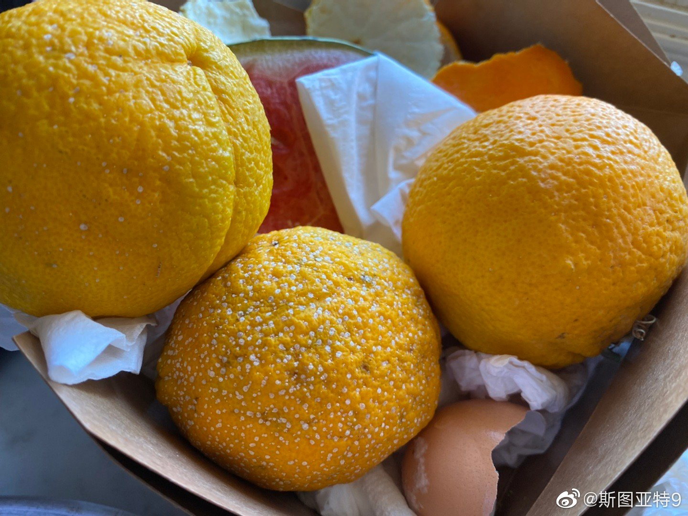

想想看，奥运会奖牌榜比拼是个钱的比拼。奥运会多数项目是没有职业化的，那么谁养活整个运动员金字塔呢？中国这样举国体制的国家的运动员是相对幸福的。从小体校选拔出来的人，只要成绩好就可以一直练下去，国家养着，虽然收入可能不高，但不用担心生活。但整个一套体制下来花费应该不少，好在中国大又有钱不在乎这一点。查了查欧洲国家，多数要么通过政府经费，要么通过政府管理的体育彩票，然后经费分到各个运动的协会，维持各种运动项目。虽然不是举国体制，也基本是半举国体制了。日韩估计也类似吧。美国反倒显得有点奇葩，政府不拿钱，也没有彩票这种。多数运动项目青训靠的是大学体育（大学靠是NCAA赚钱的项目不给学生工资反哺、学生学费和公立学校经费的综合？）。优秀运动员毕业后要想继续从事基本靠赞助和代言（给个人和项目管理协会都有吧）。美国这个制度感觉运动员和运动协会都辛苦很多，也缺乏稳定感。这样的制度美国还能出这么多奥运会奖牌全凭整个国家大而富裕，各方面捐点小钱汇集起来可以撑起这么多的项目。在欧洲国家不断加大经费投入的趋势下，美国这个制度还能不能坚持有竞争力实在是不好说的。而相比之下，那些小国、穷国、政府不愿意出钱的国家，怎么在奥运会上争夺奖牌？感觉实在是很难的事情。没钱怎么搞奥运体育项目啊？想通了奥运奖牌榜就基本就是钱的比拼，突然觉得这个榜基本就是大国展示经济实力的平台，感觉好没意思。

斯图亚特9
2021-08-09
斯图亚特9
2021-08-09
话说看网上阿里这一波连带出来把花名文化一起骂：“一个连真名都不允许用的企业，谈何尊重。” 想想还真挺有道理的。
斯图亚特9
2021-08-09
要不是一个橙子长满了霉点，我肯定不会注意到旁边两个身上零星的小白点。
- 